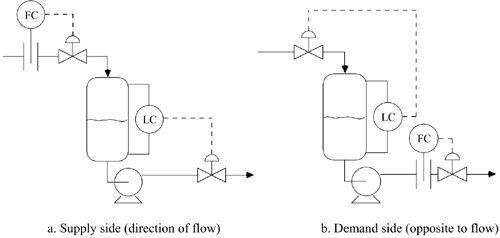
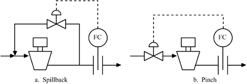
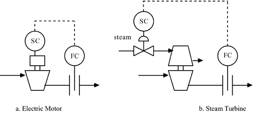
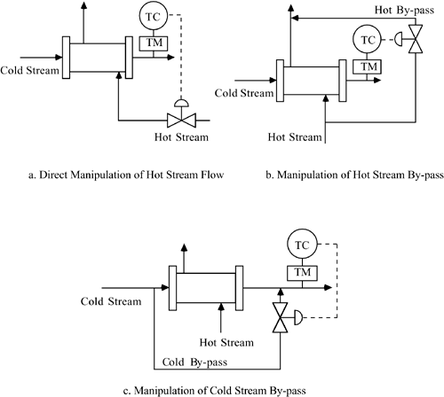
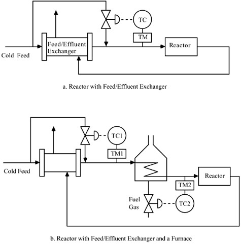

| [ Team LiB ] |
|
15.3 Unit Operations Not Previously CoveredIn this text, we have covered the control of a few unit operations but have not discussed control structure determination in detail. In this section, we first discuss the two major structures for maintaining material balance control, and then we discuss the control of some typical unit operations that occur in a process flow sheet. Supply-Side vs. Demand-Side Control of ProductionMaterial balance control can be accomplished using two approaches: supply side (direction of flow) and demand side (direction opposite to flow). A simple surge tank level example is shown in Figure 15-10. The level controller manipulates the flow out of the vessel in supply-side control, while the level controller manipulates the feed flow to the vessel in demand-side control. Figure 15-10. Control in direction of flow (supply side) vs. direction opposite to flow (demand side). Using supply-side control, a change in the flow rate setpoint propagates downstream as a disturbance to all units that follow. In demand-side control, a flow rate setpoint change propagates upstream to all units that precede the unit. Luyben (1999) has studied demand-side control structures for complex flow sheets and finds that they often add additional lags and create control problems, particularly when distillation columns are involved. This causes greater product variability, so the supply-side structure is generally recommended. Compressor ControlIt is more economical to condense a vapor stream and pump it than to vaporize a liquid stream and compress it. Gas compressors are often used on recycle streams composed of light components (hydrogen, methane, etc.). For these systems, it is not economical to condense the streams and pump them as liquids. Compressors that operate at a constant speed are usually controlled using one of the strategies shown in Figure 15-11. Usually the "pinch" method will have lower operating costs than the "spillback" method. Variable speed control methods are shown in Figure 15-12 for an electric motor drive and for a steam turbine drive. The operating costs of variable speed compressors are generally lower than for fixed speed systems, with perhaps a slightly higher initial capital cost. Figure 15-11. Constant speed control systems. Figure 15-12. Variable speed control systems. When compressors are used on recycle streams, Douglas (1988) generally recommends that they be operated "wide open"; that is, at a constant maximum flow rate. This is because the economic return from the increased overall yield usually outweighs the incremental operating cost of the compressor. Heat ExchangersHeat exchangers are used in a large number of temperature-control services, so here we focus on the regulation of the exit temperature of a cold process stream that is exchanging heat with a hot process stream. A common application would be a feed/effluent exchanger for a chemical reactor. Three possible strategies are shown in Figure 15-13. The preferred method will often be that shown in Figure 15-13c, since the dynamics will be much faster than for the other two strategies shown. A change in the cold bypass flow rate has an almost immediate effect on the cold stream outlet temperature. Figure 15-13. Alternative temperature control strategies for a heat exchanger. Adiabatic Plug Flow ReactorsIt is important to control the inlet temperature of adiabatic plug-flow reactors, since there is no method to add/remove energy from the reactor. For an exothermic reaction with a substantial heat effect, one might consider using the heat from the reactor effluent to preheat the feed to the reactor, as shown in Figure 15-14a. A problem with this strategy is that it is not very flexible; if the bypass valve saturates (becomes fully closed, for example), there is a loss of temperature control. Also, additional equipment will usually need to be added to start up the system. The alternative shown in Figure 15-14b leads to a more flexible design. Particularly at start up, the furnace allows the cold feed to be heated to a high enough temperature to initiate the reaction. The sacrifice is higher energy consumption; the relative increase depends on the steady-state ratio of the feed/effluent exchanger and furnace duties. Figure 15-14. Temperature control for an adiabatic plug flow reactor. |
| [ Team LiB ] |
|